Scientific Classification
| Kingdom | Animalia | Anima; | Animals |
|---|---|---|---|
| Phylum | Chordata | Animalia | Animalia |
| Superclass | Tetrapoda | τέσσᾰρες + πούς | Four-Footed |
| Infraclass | Batrachomorpha | βᾰ́τρᾰχος + μορφή | Frog-shaped |
| Clade | Trioculli | τρεῖς + oculus | Three-eyed |
| Class | Fabadontia | faba + ὀδούς | Bean-toothed |
Taxonomic note: Fabadontia is one of the six endemic tetrapod classes recognized by the Assembly in its classification of Kaimere's First Dynasty fauna. The designation reflects the independent evolutionary history of these animals and their separation from Earth-derived tetrapod lineages. The Assembly's classification follows the Linnaean system, which was adopted during the eighteenth and nineteenth centuries when Kaimeran flora and fauna were first formally catalogued. Taxonomic ranks such as class are conventional rather than strictly definable, and their usefulness varies considerably across geological time.
01 · INTRODUCTION
Overview
The Fabadontia, commonly known as fabadonts, are one of the most distinctive and enduring groups of endemic tetrapods to have evolved on Kaimere. First appearing during the First Dynasty, approximately 360 million years ago, they represent one of the major evolutionary radiations of the planet's indigenous terrestrial vertebrates. Although their modern diversity is considerably reduced from its prehistoric extent, fabadonts remain an important component of several ecosystems, particularly on Kaishel and among the islands of the Pakardio-Khalin plate.
Fabadonts are most readily recognized by their distinctive teeth, from which the group derives its name. The term fabadont refers to the kidney- or bean-shaped form of their teeth, which are among the most frequently encountered fossils from the First Dynasty. This simple dental characteristic, however, conceals an unusually specialized feeding apparatus. Fabadonts possess a cornified beak and several batteries of teeth distributed throughout their jaws and palate. These are complemented by roughened, cornified tongues that manipulate vegetation against the dental surfaces, allowing the animals to process large quantities of tough plant material with considerable efficiency.
The resulting cranial anatomy is remarkably consistent across the group. Fabadonts possess elevated principal eyes and a highly developed parietal eye, giving them three functional visual organs. Their principal eyes are positioned within prominent cranial extensions formed by several of the bones surrounding the orbit. The parietal eye occupies the upper surface of the skull and appears to have developed into a sophisticated visual organ very early in the group's evolutionary history. Modern fabadonts are believed to possess extensive color vision through this third eye, while their principal eyes are more sensitive to movement.
The head is perhaps the most conservative part of fabadont anatomy. Despite an extraordinary range of body forms, the characteristic cranial organization has remained recognizable for approximately three hundred million years. During this time, the group has produced aquatic, terrestrial, arboreal, legless, bipedal, and even flying forms. Some became specialized filter feeders, others pursued fish, while terrestrial representatives evolved into substantial herbivores capable of processing vegetation that many other animals could not efficiently consume. The persistence of their unusual skull suggests that the group developed a highly effective feeding and sensory arrangement early in its history, one that was subsequently retained even as the rest of the body underwent extensive modification.
Fabadonts are endothermic and oviparous. Several terrestrial lineages also possess a distinctive fur-analogue integument known as setofibrils, composed of dense, hair-like filaments. In some species, this covering is associated with a layer of dermal bone flakes, or osteoderms, which form a protective pavement beneath the skin. These adaptations are particularly well developed among the larger terrestrial forms of the southern continent, where fabadonts evolved alongside some of Kaimere's most formidable native predators.
Although the group was once distributed across much of Kaimere, its present range is considerably more restricted. The emerald fabadont survives in the highlands of Pakardia, while several more diverse lineages remain on Kaishel and the islands surrounding it. Other forms, including the keyasuda of the Blackfish Island, are known from a combination of fossil evidence, photographs, and the accounts of indigenous peoples. The modern representatives are only remnants of a lineage that once occupied nearly every major terrestrial and aquatic environment available to it.
02 · DEEP TIME
Evolutionary History
Origins during the First Dynasty
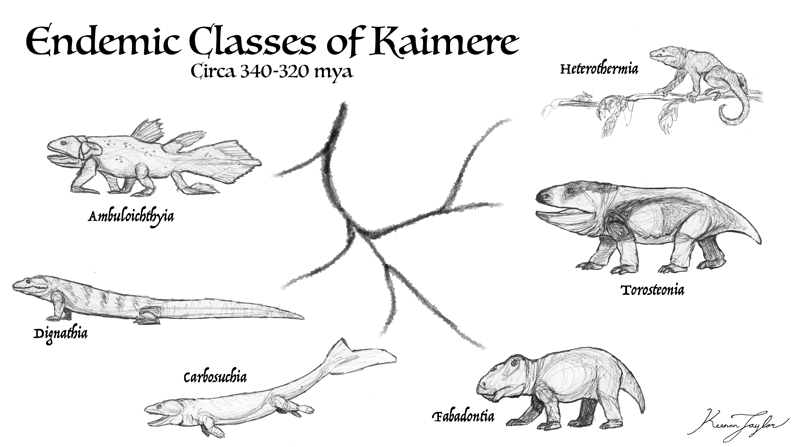
Fabadonts originated during the First Dynasty, following the initial establishment of complex terrestrial ecosystems on Kaimere. The planet had experienced several million years of successive introductions from Earth, beginning during the Late Devonian and continuing into the Early Carboniferous. These harvests introduced a wide variety of organisms, but terrestrial ecosystems initially developed slowly. Much of the land surface consisted of exposed bedrock, limiting the establishment of plants whose roots required developed soils. Large fungi were among the first organisms capable of penetrating and breaking down the rocky substrate. Their activity released nutrients, while repeated fires and the accumulation of ash helped establish the first substantial soils.
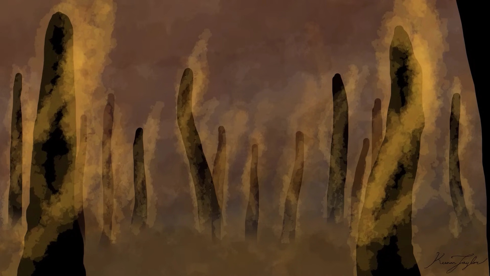
The rapid expansion of plants and fungi transformed the planet's ecology. Increasing soil depth allowed more vegetation to establish itself, which in turn contributed to the development of extensive terrestrial habitats. Nutrient runoff initially devastated marine ecosystems, producing widespread algal and magical blooms that caused Kaimere's first major mass extinction. Terrestrial environments, however, continued to expand and diversify. By the beginning of the First Dynasty, approximately 360 million years ago, much of the planet was warm, humid, and densely vegetated.
It was within this environment that several independent groups of Kaimeran endemic tetrapods evolved. The Assembly classifies six major radiations from this period as distinct classes, although the use of such high taxonomic ranks for lineages whose common ancestors lived relatively close to the original harvest is recognized as problematic. These classifications are primarily a practical convention inherited from earlier Assembly naturalists. The Fabadontia are among the most recognizable of these groups.
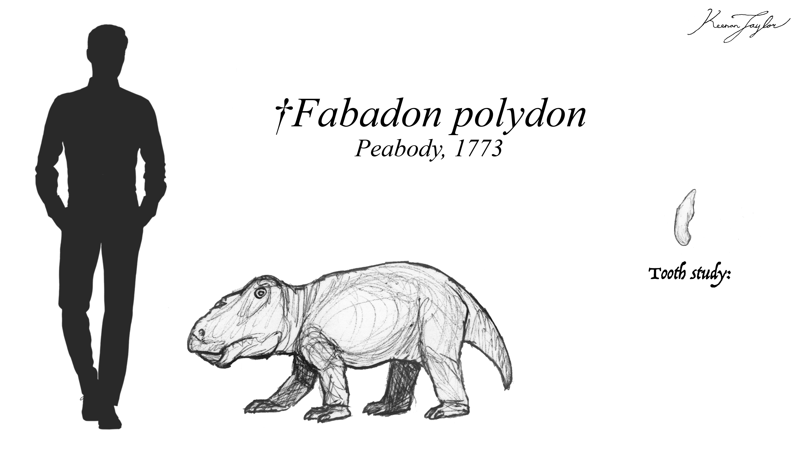
The earliest fabadonts were probably considerably less specialized than their descendants. Their bean-shaped teeth were an important diagnostic characteristic, but the lineage quickly developed a distinctive cranial structure. A cornified beak emerged, while the teeth became organized into several batteries along the jaws and palate. The roughened tongue provided an additional surface against which vegetation could be processed. This arrangement was highly effective at reducing tough plant material before it entered the digestive tract, allowing fabadonts to exploit a wide variety of vegetation.
Their visual anatomy also became distinctive early in their history. The parietal eye, initially a comparatively simple sensory organ in ancestral tetrapods, developed into a fully functional eye during the early First Dynasty. The principal eyes became elevated within extensive bony projections surrounding the orbital region. These structures incorporate extensions of the postorbital, postfrontal, frontal, prefrontal, and jugal bones, producing the characteristic elevated appearance of the fabadont skull.
The resulting arrangement appears to have divided visual functions between the different eyes. The parietal eye is thought to have developed sophisticated color vision, although it was probably less sensitive to motion. The principal eyes were more specialized for detecting movement, with fewer color receptors. The precise visual capabilities of the earliest species are uncertain, but the fundamental arrangement has been retained among modern representatives.
This early specialization had important consequences for subsequent evolution. The fabadont skull became a highly derived structure, combining an efficient feeding apparatus with an elaborate visual system. As a result, the lineage retained much of its cranial organization even as it diversified into radically different body forms. A similar evolutionary conservatism is observed among the dicynodonts of the Permian Islands, whose characteristic skulls have also remained relatively consistent despite extensive ecological diversification. In both cases, a highly successful specialized anatomical arrangement appears to have constrained later changes to the head while leaving substantial scope for modification elsewhere in the body.
The First Dynasty Radiation
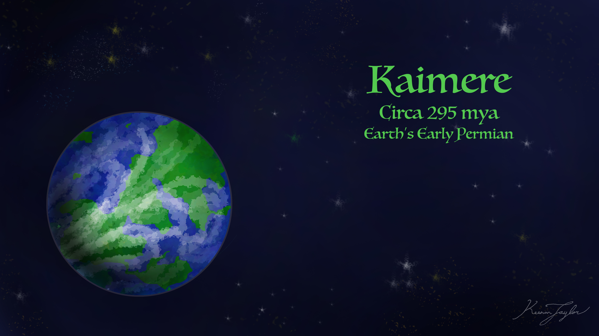
By approximately 295 million years ago, Kaimere's continents were moving closer together, allowing formerly isolated faunas to interact. The planet remained warm and humid, with extensive wetlands and rainforest environments supported by high sea levels and persistent moisture circulation. These changing geographical conditions brought the six major endemic tetrapod classes into increasingly direct competition.
The resulting ecological arms race drove considerable specialization. Competition between previously separated populations produced extinctions in some lineages, but it also encouraged the development of an unusually complex range of body forms and ecological roles. Fabadonts underwent one of the most extensive radiations of any of the endemic tetrapod groups.
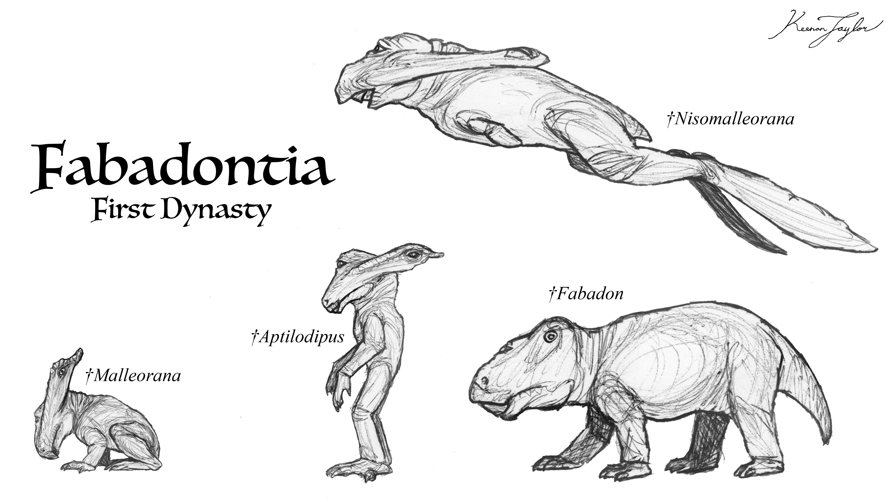
At this stage, many fabadonts remained relatively small, but their body plans diversified dramatically. Aquatic representatives became especially successful, spreading throughout the world's marine and freshwater environments. Some developed into proficient filter feeders, exploiting abundant suspended food resources, while others became specialized fish hunters. Their specialized feeding apparatus proved adaptable to a variety of diets, and their aquatic forms occupied ecological roles that were quite different from those of their terrestrial relatives.
The group also developed arboreal and other specialized forms. Later in the First Dynasty, the lineage included representatives with markedly different locomotor adaptations, including legless, bipedal, and flying forms. These radiations demonstrate that the characteristic fabadont head was compatible with an extraordinary range of body plans. Nevertheless, the group did not retain all of these forms indefinitely, and its subsequent distribution was shaped by major climatic and ecological changes.
Aridification and the End of the First Dynasty
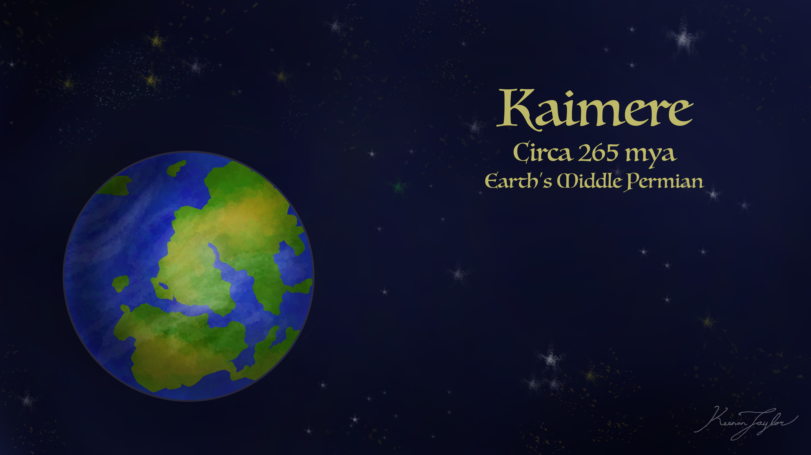
Around 265 million years ago, continental movement began to disrupt the oceanic and atmospheric circulation patterns that had sustained Kaimere's global hothouse. The increasing isolation of moisture sources produced a gradual shift toward more arid conditions. The effects were particularly pronounced in regions where extensive wetlands and shallow aquatic habitats had previously supported large populations of fabadonts.
The Portal also appears to have been positioned in an increasingly arid environment during this period. As a result, subsequent harvests introduced numerous arid-adapted organisms from Earth's Late Permian. These newcomers encountered established endemic populations, including fabadonts, heterotherms, and dignathians, which already possessed representatives adapted to dry environments. Although competition increased, the older lineages were not immediately displaced.
The more aquatic fabadonts, however, suffered substantial losses as their habitats contracted. Terrestrial and arid-adapted representatives remained more successful, particularly on the southern supercontinent. This region had become increasingly isolated from the principal harvest territories, allowing its endemic animals to continue evolving without the repeated influx of better-adapted newcomers that affected other parts of Kaimere.

Approximately 255 million years ago, an asteroid struck the tropical western coast of the Ni'Khari-Kairulan supercontinent. Although smaller than the impact associated with the end of Earth's Mesozoic and partially mitigated by Kaimere's greater planetary size, it struck at a particularly vulnerable point in the planet's ecological history. The resulting extinction ended the First Dynasty and devastated many of the ecosystems established during the preceding period.
Fabadonts survived the event, particularly in the southern regions of the supercontinent. The southern fauna had already become adapted to increasingly dry conditions and was geographically separated from some of the most severely affected areas. Nevertheless, much of the wider Known World experienced extensive ecological disruption. The subsequent Permian harvests introduced a great diversity of new terrestrial and marine organisms, and many endemic lineages were rapidly displaced from the tropical continents.
The southern supercontinent remained an important refuge. There, fabadonts and heterotherms continued to thrive, although their evolutionary paths increasingly diverged from those of populations elsewhere on Kaimere.
The Permian Dynasty and the Southern Arms Race
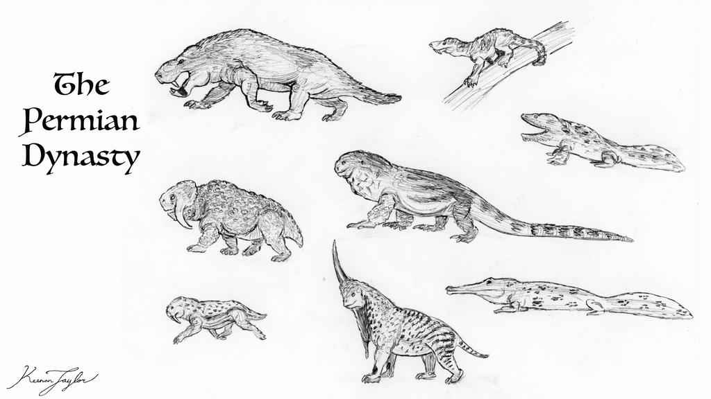
The Permian Dynasty, extending from approximately 255 to 200 million years ago, was characterized across much of Kaimere by the dominance of newly introduced Permian fauna. The tropical continents were progressively occupied by these organisms, while many surviving First Dynasty lineages were relegated to ecological fringes. The southern supercontinent, however, remained comparatively isolated from the major harvest territories. Its native fauna continued to diversify, producing an ecological system in which the endemic tetrapods retained a much greater degree of dominance.
Fabadonts became the principal large herbivores of many southern ecosystems. Their most significant competitors and predators were the heterotherms, an entirely endemic group of tetrapods characterized by their non-Newtonian slime and heterothermic metabolism. Heterotherms could enter torpor during periods of scarcity and return to a relatively high metabolic state when prey became abundant. Originally arboreal, they had diversified into terrestrial predators and occupied the apex niches of many ecosystems.
Two major heterotherm radiations, the Pituitveria and Xenosimia, became especially important during this period. The pituitverians were generally large, robust predators, and several retained much of the body form exhibited by their modern descendants. Their principal method of capturing prey was to discharge adhesive slime. This substance possessed the same non-Newtonian properties as the slime coating their bodies: it adhered strongly to its target, becoming increasingly resistant as the trapped animal struggled.

Large fabadonts were among the principal prey of these predators. Their abundance and substantial body size made them a major component of the southern continent's terrestrial food webs. The resulting predatory pressure drove the evolution of several defensive adaptations that would become characteristic of many later terrestrial fabadonts.
One of the most important developments was the appearance of setofibrils, a hair-like integument that helped maintain internal temperature during the cold periods experienced in the southern latitudes. The evolution of this fur-analogue allowed fabadonts to remain active in environments where temperatures fluctuated considerably. Their endothermic metabolism was another important component of this adaptation, permitting them to maintain relatively consistent body temperatures independently of external conditions.
Their skin also became increasingly reinforced. Many terrestrial species evolved a pavement of bone flakes beneath the integument, forming a protective layer that strengthened the skin and helped resist both cutting and blunt-force injuries. This armor was most concentrated around the rump and tail, although smaller osteoderms were present over the limbs, back, and belly. The skull bones became thickened and were reinforced by a substantial keratinous covering.
These defenses were not uniformly distributed across the body. The joints and armpits remained comparatively vulnerable, providing predators with the only reliable locations at which to penetrate the protective covering. The concentration of armor around the rear of the body also provided protection during attacks from behind, particularly important for animals whose principal predators relied on ambush or adhesive capture.
Some fabadonts even evolved another highly specialized defense against heterotherms: the ability to discharge concentrated saline secretions. Many southern species consumed marine vegetation along shorelines during seasonal periods of abundance. This diet resulted in the absorption of substantial quantities of salt, which were subsequently stored in specialized anal glands. When threatened, the animals could discharge the concentrated salt solution in a powerful spray.
This defense was particularly effective against heterotherms. Their external slime and skin were highly vulnerable to saline solutions, which could compromise the properties of their protective covering. A fabadont capable of delivering a concentrated saline discharge could therefore deter a predator that might otherwise have been difficult to repel through ordinary physical defenses.
Together, setofibrils, osteoderm armor, reinforced skulls, and saline secretions allowed terrestrial fabadonts to remain successful despite intense predation. They were among the largest herbivores on the southern continent and had become well adapted to its native predators. Their success was aided by their isolation from the Portal's principal territories, which allowed them to adapt gradually to local environmental pressures rather than repeatedly competing with newly introduced fauna.
The Mesozoic Interchange
The relative stability of southern Kaimere began to change around 115 million years ago. Rising global temperatures altered the ecological balance of the northern and southern continents. In mainland Kairul, parasauropods and coelophosaurs had previously occupied many of the cooler temperate habitats. As the climate warmed, their established ecological position became less secure, and competition increased.

At approximately the same time, a portion of Arvel became connected to eastern Kairul by a relatively short land bridge. Arvel was then part of a much larger southern continental landmass that also included what would eventually become Kaishel, Pakardia, and the southern islands. The land bridge created a temporary corridor for faunal interchange, allowing animals from the temperate regions of the south to enter the ecosystems of the southern supercontinent.
For the endemic fauna, the consequences were substantial. Until this point, much of the southern continent had remained dominated by its native tetrapod classes. Heterotherms were the principal terrestrial predators, while fabadonts formed the dominant large-herbivore assemblage. The arrival of dinosaurs and other introduced organisms fundamentally altered this arrangement.
The incoming fauna included elasmarian dinosaurs, dromaeosaurs, megaraptorans, parasauropods, and coelophosaurs. These animals spread rapidly through the newly accessible territories. The parasauropods and coelophosaurs proved particularly successful on Kaishel, where they occupied many of the ecological roles formerly held by endemic tetrapods.
The connection between Arvel and eastern Kairul lasted for only around five million years. As the southern continent continued rotating, the land bridge disappeared, and the region became increasingly separated. Nevertheless, the initial interchange had already introduced several groups that would permanently alter the ecology of the southern continent.
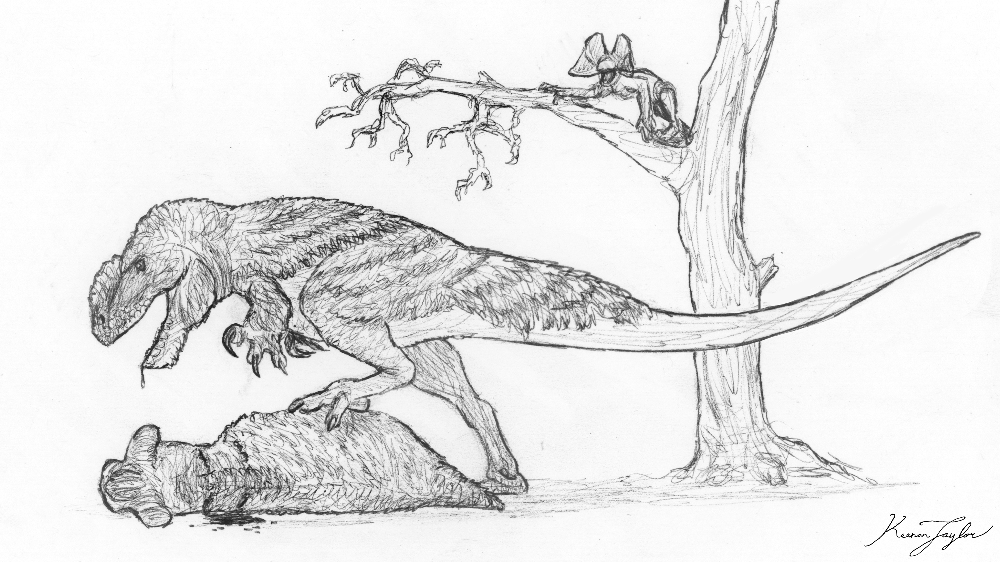
Fabadonts faced increasing competition from parasauropods and elasmarians, both of which exploited much of the same vegetation. Their principal advantage had previously been their capacity to process a wide range of tough plant material efficiently. As larger dinosaurs expanded into these habitats, fabadonts increasingly lost access to some of their former ecological opportunities. They also faced predation from newly arrived theropods.
Heterotherms suffered a comparable decline. Their position as dominant terrestrial predators became increasingly difficult to maintain against the incoming dinosaurian predators, and many were reduced to mesopredator roles beneath the coelophosaurs.
The effects of this interchange were not uniform across the continent. Fabadonts disappeared from Arvel, while Kairulan populations were pushed into increasingly restricted ecological niches. On Kaishel, however, they continued to survive beneath the dominant parasauropods. Although their former ecological prominence was greatly reduced, the continued presence of fabadonts on Kaishel proved important to the later survival of the group.
Pakardian Isolation and Renewed Diversification
Approximately forty million years ago, another major tectonic separation transformed the southern continent. The Pakardio-Khalin plate rifted from Kaishel, carrying with it a distinct assemblage of plants and animals. Pakardia, the easternmost emergent remnant of the plate, subsequently drifted northward. For approximately twenty-five million years, the plate traversed comparatively warm latitudes, but its fauna retained many of the characteristics acquired during its earlier isolation.
Fabadonts were among the lineages carried to the new landmass. Their presence in Pakardia would prove particularly important, as the region subsequently experienced considerable ecological turnover. Large parasauropods and coelophosaurs became extinct, while smaller representatives persisted. Multituberculate mammals and small dinosaurs diversified into the ecological opportunities left behind, and heterotherms, particularly the blind xenosimians, became major terrestrial predators.
The disappearance of the largest dinosaurs also removed many of the competitors that had previously restricted fabadont populations. With large herbivorous niches becoming available, fabadonts underwent a renewed diversification. Their radiation was part of a broader recovery of Pakardia's endemic fauna, which included the expansion of small parasauropods, elasmarians, multituberculates, parankylosaurs, and other surviving lineages.
This renewed period of diversification was interrupted by the Dynastic Extinction approximately fifteen million years ago. Pakardia experienced extensive volcanic activity, rapid uplift, seismic instability, and major changes in rainfall and coastlines. The extinction unfolded over millennia rather than as a single catastrophic event, but the consequences were severe. Large parasauropods and coelophosaurs disappeared, while numerous other megafaunal lineages were reduced or eliminated.
Fabadonts survived the event and benefited from the ecological recovery that followed. Volcanic deposits created fertile soils, and forests expanded across the island once tectonic instability subsided. Small-bodied survivors diversified into newly available niches, and fabadonts were among the most successful of the returning herbivore lineages.
For nearly twelve million years following the extinction, Pakardia maintained a comparatively stable endemic ecosystem. Fabadonts occupied a range of body sizes and ecological roles, while other surviving groups diversified alongside them. This period represented one of the last major expansions of the lineage in the Known World.
The Pleistocene turnover

Approximately 1.5 million years ago, a reduction in Kaimere's axial tilt altered the planet's climate. Seasonal extremes diminished in some regions, but latitudinal temperature contrasts intensified. Polar regions cooled, subtropical atmospheric circulation strengthened, and changing rainfall patterns affected primary productivity across much of the planet.

For Pakardia, these changes were accompanied by falling sea levels. The exposure of continental shelves allowed intermittent interchange with neighboring landmasses, opening the island to faunal introductions from mainland Arvel and, through the Portal, from Pleistocene Asia. These newcomers were already adapted to the climatic and ecological pressures of the Pleistocene. Many possessed broad ecological tolerances and were better able to exploit the changing conditions than the endemic megafauna of Pakardia.
The ensuing Pleistocene Harvest caused the extinction of nearly all of Pakardia's native megafauna. Parasauropods disappeared entirely, and larger elasmarians declined dramatically. Numerous introduced animals became established, including wolves, brown hyenas, pronghorns, and red panthers. The modern ecosystem was consequently assembled from a mixture of surviving endemic lineages and newly arrived continental animals.
Fabadonts suffered a particularly severe contraction. Their former diversity disappeared, and only one species survived into the modern era: the emerald fabadont. Its survival is generally attributed to its comparatively small size and generalized body plan. Unlike the giant fabadonts that had previously occupied the island, the emerald fabadont is only approximately the size of a wild boar. Its broad diet and ability to exploit a variety of vegetation appear to have allowed it to persist where more specialized relatives could not.
Pakardia therefore represents a substantial contraction of the group's former range. Numerous other fabadonts still hold a presence in the Khalin Islands. But they are a shadow of their former range and diversity. The surviving species is not necessarily representative of the evolutionary diversity that once existed on the island, but it demonstrates the continued adaptability of the lineage. On Kaishel, by contrast, fabadonts remain considerably more diverse and retain an important ecological presence.
03 · SPECIES ACCOUNTS
Known Diversity
The following accounts document representative fabadonts recorded in the encyclopedia. Select a species to consult its individual natural history and descriptive account.
Emerald Fabadont
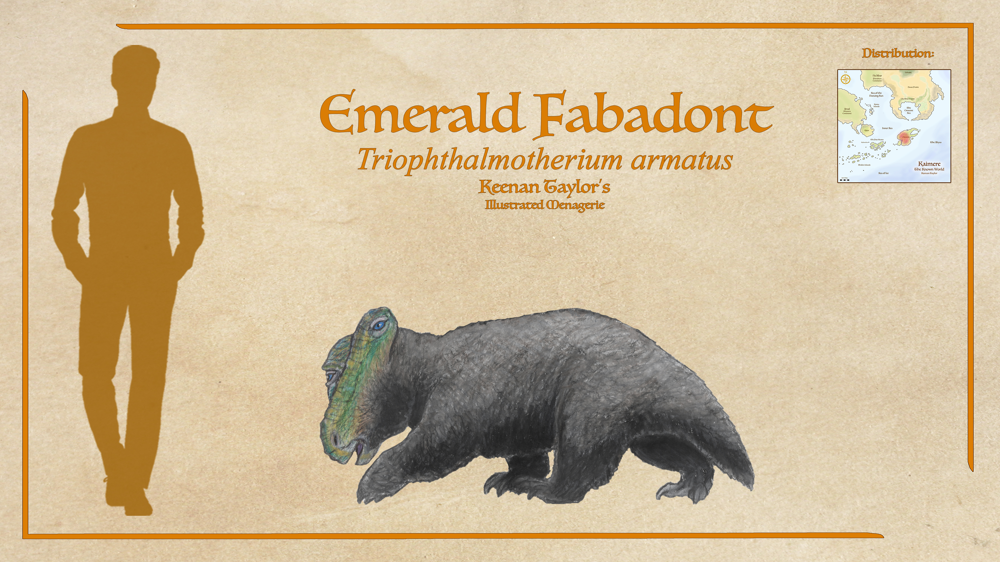
Triophthalmotherium armatus
The emerald fabadont is a fairly common herbivore in the highlands of Pakardia. They dig their burrows and live above the high waterline of the Great Lakes, where most large herbivores tend to congregate. The clade name, 'fabadont', means 'bean tooth' in reference to the kidney bean shape of their teeth. They have around 300 teeth at a given time, filling out conventional tooth row in staggered groups, and the roof of their upper palate also has teeth that their cornfield tongues can masticate against. This formidable processing apparatus allows fabadonts to rapidly process a wide variety of vegetation and since it is already substantially processed by the time it gets to their guts, they can get by on whatever they digest. It is common for emerald fabadonts to eat the mossy bark at the base of trees. While not seeking to make constructions like beavers, they still weaken a lot of trees which jurazhent then shove down. Because of this, floral turnover is quite high in the Pakardiant highlands, helping keep these forests dynamic and healthy.
Read species article →Keyasuda
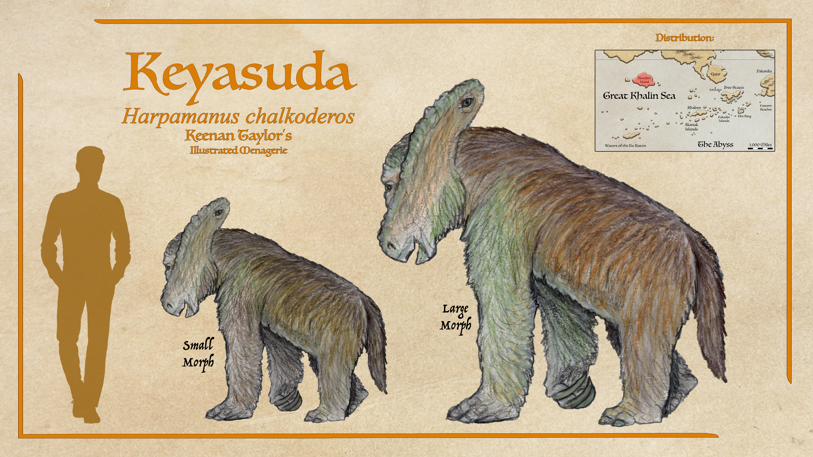
Harpamanus chalkoderos
Another giant native animal of the Blackfish Islands is the keyasuda. In her journal Felicity called it a three-eyed sloth, and assumed it was a homunculus, but with further studies of the fossil record and study of animals in realms beyond, it is now assumed to be a fabadont. It is very close in description to the sophitheriid fabadonts that have fossils throughout the Pakardiokhalin islands, and appears to have been a very successful herbivore group that radiated after the Dynastic Extinction at some point of low sea level, possibly the Great Drying or sometime prior. Though Felicity said there were two kinds, one that was social and drab and the other solitary and colorful, it is believed that they are two sexes of the same species. The larger more colorful wise beast is assumed to be the males, which would be consistent with some fabadont clades, but since some Kaishelan fabadonts have males raising young in groups, this is not something that can be said conclusively. Though the largest photographed was just over a meter and a half at the shoulder, Felicity said a great beast two meters high was brought to the village by Wind-Kisser's band and kept for a few weeks then butchered, so there may be much larger specimens in the interior than have been presently observed.
Read species article →Baldwin's Wise Sloth

Phoberocnus baldwini
The 'wise sloths', or sophitherioids, are a lineage of primarily arboreal fabadonts that also have fully terrestrial representatives, much like sloths themselves. Baldwin's wise sloth of the Gyrehall island is a quintessential example of the clade. Three eyes, two conventional and one parietal, all face forward. This is thought to be an adaptation to their navigation through dense trees. Baldwin's sloth is quite slow, though some of this lineage navigate quite swiftly through the branches in short bursts. They are herbivores that primarily feed on needles and cones, though they will feed on moss and bark on occasion.
Read species article →Mossback Atabat
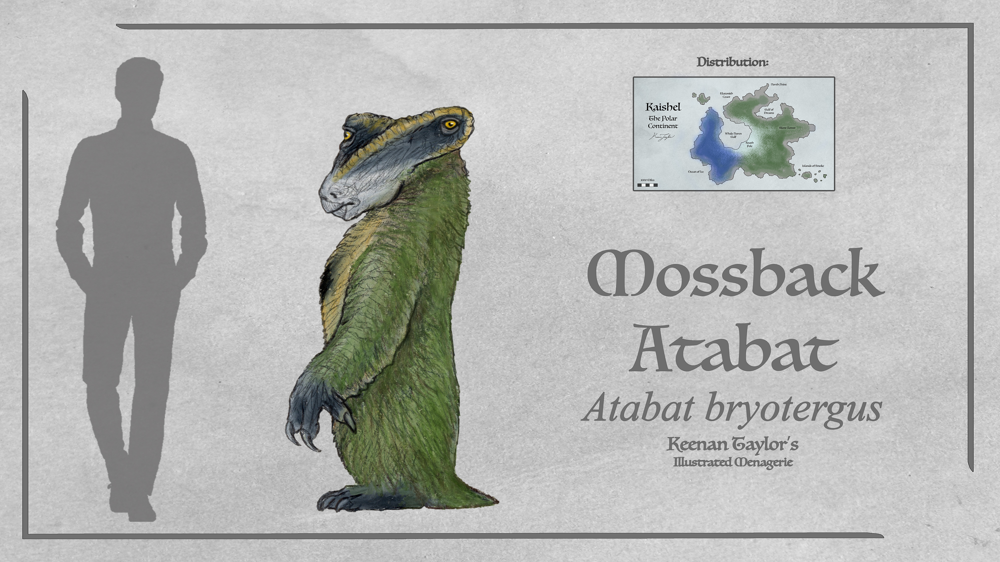
Atabat bryotergus
Atabats are an abundant clade of fabadonts and among the most common herbivores in their size range in Kaishel. Herds of these meander slowly through the floors of the silent forest, consuming a wide range of vegetation from ferns and moss to bark and saplings. They are said to also eat dirt by both the Tlaton and one field researcher, though it is unknown if this is rooting for fallen needles and mast or an unknown use for soil itself. They have osteoderms under dense filaments, affording them protection from theropod and heterotherm predators alike. Mossback atabats are generally restricted to the interior on the western third of the continent, but they have been seen on the coast during the summer months.
Read species article →Tra Ba
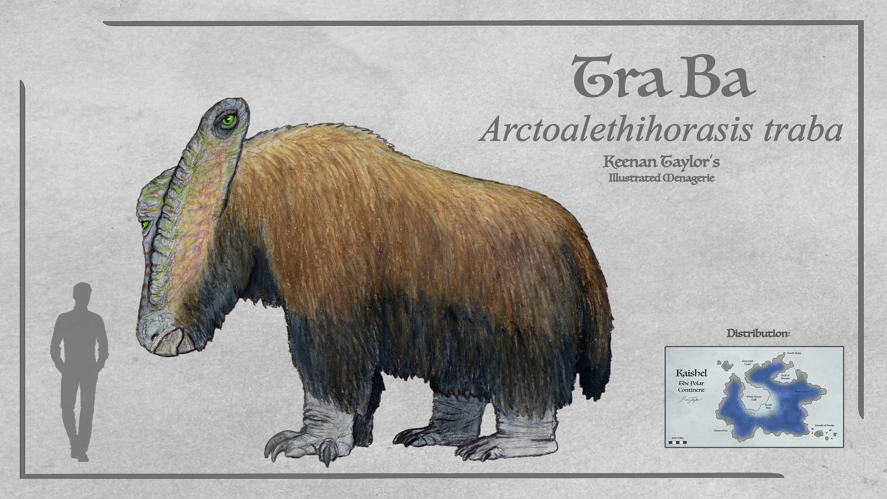
Arctoalethihorasis traba
The tra ba is Kaishel's largest fabadont, with large males weighing up to 5 tons. These are mixed feeders, grazing on ferns and horsetails in the open and bark or leaves in the Silent Forest. This versatile diet coupled with being among the best chewers does put them in direct competition with many parasauropods, which often must resort to higher browsing as a consequence of this competition. A formidable collection of six hundred teeth that are regularly replaced means they can process just about any vegetation. Osteoderms along their back, shoulders, and hips afford defense alongside their coat of hair-analogues, which is quite sparse in this larger species. They consume a considerable amount of salt water while gorging on kelp prior to venturing into the Silent Forest in winter, and glands on either side of the anus secrete this excess salt so the back half of the animal not only smells of salt, they can spray it behind them in a burst. This deters the moørkutlot that might detect them, but for the most part, they are slow-moving and silent foragers.
Read species article →04 · CLASSIFICATION
Taxonomic Notes
The Fabadontia, commonly known as fabadonts, are one of the six major classes of Kaimeran endemic tetrapods (KETs) recognized by the Assembly. They represent one of the most distinctive and successful indigenous vertebrate lineages to have evolved on Kaimere, originating during the First Dynasty and persisting through successive dynastic turnovers to the modern era.
The name fabadont derives from the Greek phaba, meaning bean, and odont, meaning tooth, referring to the characteristic kidney- or bean-shaped teeth that are among the most common fossils associated with the earliest representatives of the lineage. Although their dentition was the original diagnostic feature used to distinguish fabadonts, subsequent discoveries of living species and more complete fossil specimens have demonstrated that the group possesses a much more distinctive anatomy than its name suggests.
Fabadonts are conventionally classified as a separate class of tetrapods, alongside other indigenous lineages such as the heterotherms and dignathians. This classification reflects the Assembly's historical use of Linnaean taxonomy, rather than necessarily representing a precise statement of evolutionary relationships. The Assembly adopted this system during the eighteenth and nineteenth centuries, when its naturalists first began cataloguing Kaimeran flora and fauna. Although such taxonomic ranks have become increasingly problematic for interpreting the fossil record, the terminology remains widely used.
The designation of Fabadontia as a class is particularly difficult to apply consistently to First Dynasty fossils. The earliest fabadonts were much closer to their common ancestors than many of their modern descendants, and the morphological differences that justify recognizing distinct classes among living Kaimeran animals had not yet fully developed. Consequently, the classification of First Dynasty representatives can be misleading when interpreted too literally.
Nevertheless, the term remains useful for distinguishing fabadonts from other independently evolved Kaimeran tetrapods. Their evolutionary history is especially remarkable for the degree of anatomical diversification they achieved while retaining a remarkably conservative cranial structure.